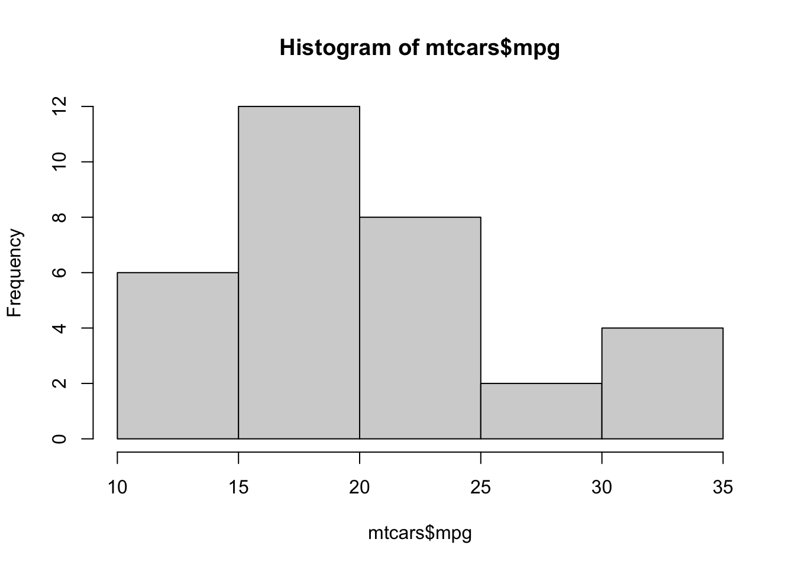
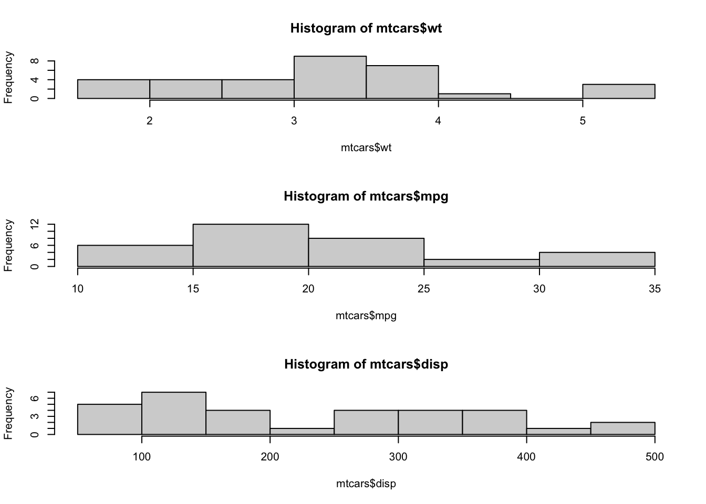

R Techniques 7: Plots
1 Standard plots
One of the main strengths of R is for its strong graphic capabilities, allowing fo the creation of easily-customised and complex plots. We begin by reviewing the R functions for producing the standard plots: scattter plots, histograms, boxplots, and quantile plots.
1.1 Scatterplots
The plot function produces a scatterplot of its two
arguments. For illustration, let us use the mtcars data set
which contains information on the characteristics of 23 cars. We can
plot miles per gallon against weight with the command
data(mtcars)
plot(x=mtcars$wt, y=mtcars$mpg)
If the argument labels x and y are not
supplied, R will assume the first argument is x
and the second is y. If only one vector of data is
supplied, this will be taken as the \(y\) value and will be plotted against the
integers 1:length(y), i.e. in the sequence in which they
appear in the data.
We can add a plot title and axis labels by supplying optional arguments:
main- provides a title to display at the top of the plotxlab- provides a label for the horizontal axisylab- provides a label for the vertical axis
plot(x=mtcars$wt, y=mtcars$mpg, xlab="Weight", ylab="MPG", main="MPG vs Weight")1.1.1 Scatterplot types
Another useful optional argument is type, which can
substantially change how plot draws the data. The
type argument can take a number of different values to
produce different types of scatterplot
type="p"- draws a standard scatterplot with a point for every \((x,y)\) pairtype="l"- connects adjacent \((x,y)\) pairs with straight lines, does not draw pointstype="b"- draws both points and connecting line segmentstype="s"- connects points with ‘steps’ rather than straight lines
There are many other ways of customising the plot to use different
colours, point types, etc. This is achieved by supplying additional
optional arguments to plot, and these are described in the
Customising plots section below.
R Help: plot
1.2 Histograms
A histogram
consists of parallel vertical bars that graphically shows the frequency
distribution of a quantitative variable. The area of each bar is
proportional to the frequency of items found in each class. To plot a
histogram, we use the hist function
hist(mtcars$mpg)
As with plot, we can use main and
xlab to set the plot title and horizontal axis label.
Histogram also takes a number of arguments specific to the plotting of histograms:
breaks- allows us to control the number of bars in the histogram. Ifbreaksis set to a single number, this will be used to (suggest) the number of bars in the histogram. Ifbreaksis set to a vector, the values will be used to indicate the endpoints of the bars of the histogram.freq- ifTRUEthe histogram shows the simple frequencies or counts within each bar; ifFALSEthen the histogram shows probability densities rather than counts.
R Help: hist
1.3 Boxplots
A boxplot provides a graphical view of the median, quartiles,
maximum, and minimum of a data set. Boxplots can be created for single
variables, or for all variables in a data frame. To draw a boxplot of a
single variable, multiple variables, or all variables ina data frame, we
simply pass the data directly to the boxplot function:
par(mfrow=c(1,3))
boxplot(mtcars$mpg,ylab='Miles per gallon')
boxplot(mtcars$mpg, mtcars$cyl, ylab='MPG and Num. Cylinders')
boxplot(mtcars,main="All car milage variables")A special usage of boxplot is to take a single variable,
split that variable up into groups, and draw boxplots of the different
groups. This can be useful when the grouping is an important discrete or
categorical variable. For example, to show boxplots of miles-per-gallon
(mpg) split by the number of engine cylinders
(cyl) when both variables are defined in the same data
frame (in this case mtcars) we would do the following:
boxplot(mpg~cyl, data=mtcars, main="Car Milage Data",
xlab="Number of Cylinders", ylab="Miles Per Gallon")Optional arguments for boxplot include:
horizontal- ifTRUEthe boxplots are drawn horizontally rather than vertically.varwidth- ifTRUEthe boxplot widths are drawn proportional to the square root of the samples sizes, so wider boxplots represent more data.
R Help: boxplot
1.4 Quantile plot
Histograms leave much to the interpretation of the viewer. A better
graphical way in R to tell whether the data is distributed
normally is to look at a so-called quantile-quantile (QQ) plot. With
this technique, we plot the quantiles of the data (i.e. the ordered data
values) against the quantiles of a normal distribution. If the data are
normally distributed, then the points of the QQ plot will lie on a
straight line. Deviations from a straight line suggest departures from
the normal distribution. This technique can be applied to any
distribution, though R supports Normal quantile plots with the
qqnorm function:
qqnorm(mtcars$mpg)1.5 Combining Plots
R makes it easy to combine multiple plots into one overall
graph, using either the par or layout
functions.
With the par function, we specify the argument
mfrow=c(nr, nc) to split the plot window into a grid of nr
x nc plots that are filled in by row. For example, to divide the plot
window into a 2x2 grid we call par(mfrow=c(2,2)) as
below
Similarly, for 3 plots in a single column

To return to the usual single-plot display, we must call
par(mfrow=c(1,1)).
When we don’t want to arrange plots in a simple regular grid, we can
use the layout function. See the R help for more
details.